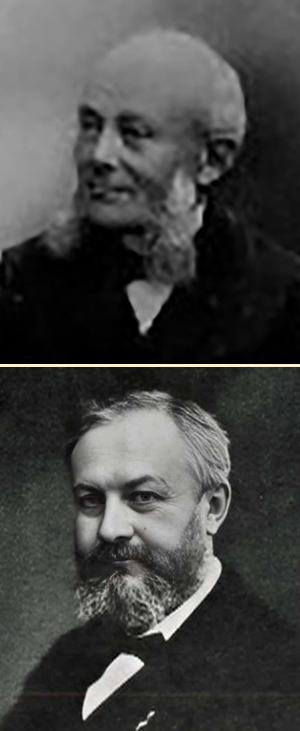
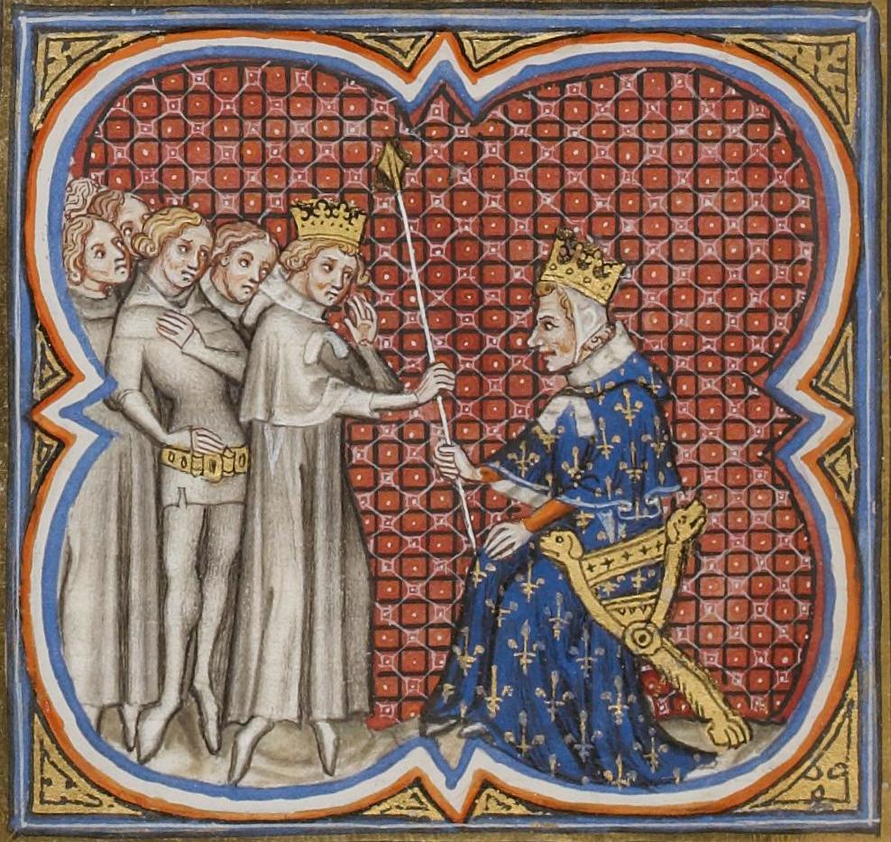

|
CC NUMISMATICS |
Close window | ||||||||
| AD 0578 - Royaume des Francs - Tiers de sou - Childebert II: | |||||||||
| Period: | Moyen Âge ; Royaume des Francs (481-843) ; Dynastie mérovingienne (481-751) | ||||||||
| Ruler: | Childebert II (575-596) | ||||||||
| Type: | Regular issue | ||||||||
| Obverse: | |||||||||
|
Design: Buste diadémé, à droite, avec un double diadème de perles Director: - Engraver: - |
|||||||||
| Reverse: | |||||||||
|
Design: Victoire à droite, tenant de la main gauche une haste en forme de bâton noueux, une croisette sous l'aile dégénérée dans le champ à gauche, et peut-être une autre croisette entre Victoire et la haste dans le champ à droite, sur une base composée d'un double trait horizontal, le trait inférieur perlé, en dessous trois globules à l'exergue Director: - Engraver: - |
|||||||||
| Thoughts: | |||||||||
This coin will not be submitted to either NGC or PCGS for grading because they do not certify Merovingian coins. Hence, I decided to encapsulate this coin myself for convenience of storage and long-term preservation of the coin. To proceed, I used the NGC AirView holder of a coin that was encapsulated by NGC (with the certification # 6947275-003), which I had cracked previously to sell the original coin raw. The operation was a success, and the task was relatively straightforward thanks to the design of the NGC AirView holder. |
|||||||||
| Edge: | Plain | ||||||||
| Alignment: | Variable (↺, 06h) | Technique: | Hammered | ||||||
| Rarity: | R3 | Material: | Gold | ||||||
| Year: | 578 (not dated) | Fineness: | 850 | ||||||
| Country: | Royaume des Francs | Weight (g): | Measured: 1.3; Expected: 1.32 | ||||||
| Issuer: | Royaume des Francs | Shape: | Round (Irregular) | ||||||
| Value: | ⅓ | Diameter (mm): | Measured: 12.5; Expected: 12 | ||||||
| Unit: | Sou (481-vers 675) | Thickness (mm): | - | ||||||
| Mint: | Arvernis | Mintage: | |||||||
| Mint mark: | None | Emission period: | 575-596 | ||||||
| Status: | Ordered | Quality: | Circulating (demonetised) | ||||||
| Grade: | Ancients Ch AU; Strike: 4/5; Surface: 4/5 (CCN) | Variety: | Croisette(s) | ||||||
| References: | DeBelfort1#328; DepeyrotMerovOr3#1 | ||||||||
| Varieties: | |||||||||
Trois exemplaires ont été examinés pour la référence DepeyrotMerovOr3#1 : DeBelfort1#327 et DeBelfort1#328, décrits par de Belfort (1892), et un autre qui faisait partie de la Collection Étienne Récamier (1834-1873), vendue par Étienne Bourgey aux enchères publiques du 2 au 6 mars 1925, comme Lot 671, au prix de FRA 110 plus 19.5% de frais de commission (FRA 21.45), c'est-à-dire au prix total de FRA 131.45 (environ EUR 134 en terme de pouvoir d'achat en 2025). Ce dernier exemplaire serait plutôt à rapprocher du Monétaire Manileobus (voir DeBelfort1#331, qui est aussi ProuMerov#1724). Il fut revendu par Josette Rassion et Yves Cellard lors de la deuxième vente aux enchères publiques consacrée à la Collection Armand Trampitsch (1890-1975), des 31 mai er 1er juin 1988, portant sur des monnaies françaises et féodales, comme Lot 6, au prix de FRA 4,200 plus 17.674% de frais de commission (FRA 742.31), c'est-à-dire au prix total de FRA 4,942.31 (environ EUR 1,448 en terme de pouvoir d'achat en 2025). Cet exemplaire a également été décrit par Alan M. Stahl comme Pièce 138 dans son ouvrage « Mérovingiens et Royaumes Barbares (VIe - VIIIe Siècles), Fonds Bourgey » publié par les Éditions Errance en 1994. Un autre exemplaire issu des mêmes coins de frappe monétaire que ce dernier a été vendu par Classical Numismatic Group, LLC., aux enchères publiques du 18 septembre 2013, comme Lot 1565, au prix de USD 1,200 plus 17.5% de frais de commission (USD 210), c'est-à-dire au prix total de USD 1,410 (environ EUR 1,061). Seul l'exemplaire DeBelfort1#328 a une croisette — ou deux — sur le revers. Ces croisettes pourraient être une imitation de l'étoile qui faisait souvent partie du type iconographique des monnaies byzantines de cette période. |
|||||||||
| Pedigree: | |||||||||
The CC Collection, acquired at CGB Numismatics Paris Live Auction September 2026 on 22 September 2026 as Lot bmv_1158269 (see https://www.cgb.fr/clermont-ferrand-civitas-arvernorvm-triens-sup-ttb-,bmv_1158269,a.html), wrongly reference as DeBelfort1#5934 Ex Mario Ratto Auction 12 (Collection Th. Ducrocq) on 26 March 1936, Lot 11 De Belfort 328 (=this coin), published in 1892 Ex Collection Théophile Ducrocq (1829-1913), possibly acquired from Camille Rollin (1843-1906) or directly at Messrs. Rollin & Feuardent Auction on 9-12 June 1890 (Collection de feu M. le vicomte de Ponton d'Amécourt - Monnaies mérovingiennes) as Lot 572 Ex Messrs. Rollin & Feuardent Auction on 9-12 June 1890 (Collection de feu M. le vicomte de Ponton d'Amécourt - Monnaies mérovingiennes), Lot 572, possibly acquired by Camille Rollin (1843-1906), who continued the business of his father Claude-Camille Rollin (1813-1883), for FRA 15 (about EUR 76 in terms of purchasing power in 2025), as suggested in hand-written marginal notes in the auction catalogue Ex Collection Gustave de Ponton d'Amécourt (1825-1888), acquired from Claude-Camille Rollin (1813-1883), a French merchant, expert in public auctions and numismat, established originally in Paris. The collection was deliberately and gradually dispersed during the life of Gustave de Ponton d'Amécourt from 1886; several large series were sold at public auctions, while 1,131 Merovingian coins were acquired by the French State from his heirs in 1889 and entered the collections of the Cabinet des médailles of the Bibliothèque nationale de France. 21 Merovigian coins of the collection were sold before his death in 1888 by Messrs. Rollin & Feuardent at public auction on 7-8 June 1886. The remaining 800+ Merovingian coins of the collection was sold as 800 lots by Messrs. Rollin & Feuardent at public auction on 9-12 June 1890, after the acquisition by the French State of 1,131 Merovingian coins in 1889. (To the top right) Photographie de Théophile Ducrocq (1829-1913), prise par un anonyme, et reproduite avec l'aimable autorisation Mathieu Touzeil-Divina (1976-Présent), professeur à l'Université Toulouse 1 Capitole Théophile (Gabriel Auguste) Ducrocq naît à Lille le 24 août 1829 et meurt à Poitiers le 20 octobre 1913. Juriste, professeur de droit administratif, économiste et membre de nombreuses sociétés savantes, il fut également un érudit particulièrement intéressé par la numismatique. Cette dernière activité, longtemps éclipsée par son œuvre juridique, mérite pourtant d'être replacée dans le contexte de la profonde transformation que connaît la numismatique française au XIXe siècle. Après des études à Nantes puis au collège Louis-le-Grand à Paris, Théophile Ducrocq entreprend des études de droit et obtient son doctorat en 1854. Sa carrière universitaire se déroule d'abord à Poitiers, où il devient professeur puis doyen de la Faculté de droit en 1877. En 1884, il rejoint la Faculté de droit de Paris. Il enseigne notamment le droit administratif, mais aussi des matières touchant à l'économie politique et aux finances. Cette formation explique largement sa manière d'aborder la monnaie. Théophile Ducrocq n'est pas un numismate spécialisé au sens moderne du terme. Pour lui, la monnaie est à la fois un objet matériel, un instrument économique, une institution juridique et un document historique. Cette conception apparaît particulièrement dans ses « Études d’Histoire Financière et Monétaire », publiées en 1887. L'ouvrage réunit des études consacrées à la monnaie sous l'angle du droit et de l'économie, aux conventions monétaires, aux ateliers et à la fabrication des monnaies, mais aussi à des séries gauloises, romaines, mérovingiennes, carolingiennes et anglo-françaises. Cette diversité est caractéristique de sa démarche. Une monnaie ne l'intéresse pas uniquement pour son type ou sa rareté : elle témoigne d'une autorité, d'un système économique, d'une organisation administrative et, plus largement, d'une époque. Son regard de juriste l'amène naturellement à s'interroger sur le pouvoir d'émettre la monnaie, le contrôle de sa fabrication et les rapports entre monnaie et souveraineté. L'installation durable de Théophile Ducrocq à Poitiers joue un rôle essentiel dans son activité d'érudit. Il devient membre puis président de la Société des Antiquaires de l'Ouest, et participe ainsi à un milieu où se rencontrent historiens, archéologues, collectionneurs et érudits locaux. Il est également membre du Comité des travaux historiques et scientifiques et correspondant de plusieurs institutions savantes. Dans ce contexte, la numismatique constitue un moyen privilégié d'étudier l'histoire régionale. Théophile Ducrocq publie notamment, en 1890, une « Note sur des Pièces de Monnaie Mérovingiennes Intéressant le Poitou ». Il s'intéresse également à des monnaies mérovingiennes découvertes en Dordogne, notamment à des tiers de sou d'or, ainsi qu'aux monnaies carolingiennes du Poitou. Ces recherches sont révélatrices de l'évolution de la numismatique au XIXe siècle. Celle-ci se détache progressivement de la simple collection d'objets rares pour devenir une source historique à part entière. Une monnaie trouvée dans un contexte archéologique peut renseigner sur la chronologie, la circulation des hommes et des marchandises, l'existence d'un pouvoir local ou les relations entre différentes régions. Théophile Ducrocq participe à cette évolution en étudiant les monnaies dans leur environnement historique et géographique. Ses recherches sur le Poitou prennent ainsi place dans un mouvement plus général qui voit les sociétés savantes régionales contribuer à la constitution d'une véritable documentation numismatique nationale. Son œuvre témoigne également d'un intérêt très large pour l'histoire de la monnaie. Dans les « Études d’Histoire Financière et Monétaire », les monnaies antiques voisinent avec les monnaies médiévales et modernes. Il étudie notamment les monnaies romaines consulaires, le sesterce, le monnayage de Constantin, les monnaies gauloises, le monnayage anglo-français d'Aquitaine et les monnaies carolingiennes du Poitou. Cette amplitude chronologique correspond à une conception dans laquelle la numismatique participe à l'histoire générale des institutions. Le passage d'un système monétaire à un autre, la modification des poids et des titres métalliques, l'apparition d'un nouvel atelier ou d'un nouveau type monétaire peuvent être interprétés comme les manifestations de transformations politiques et économiques. Cette conception doit être replacée dans le mouvement général de la numismatique française au XIXe siècle. Parmi les personnalités qui contribuent alors au renouvellement de la discipline figure Gustave de Ponton d'Amécourt (1825-1888), ingénieur, collectionneur et spécialiste des monnaies mérovingiennes. L'un des fondateurs, en 1865, de la Société française de numismatique et d'archéologie, il publie notamment en 1864 son « Essai sur la numismatique mérovingienne comparée à la géographie de Grégoire de Tours ». Son travail illustre une numismatique de plus en plus attentive à l'histoire, à la géographie et au contexte des découvertes. Théophile Ducrocq appartient à ce même milieu savant, mais son approche est différente. Là où Gustave de Ponton d'Amécourt se spécialise principalement dans les monnaies mérovingiennes et dans leur étude archéologique et historique, Théophile Ducrocq aborde la monnaie à partir de sa formation de juriste et d'économiste. La comparaison entre les deux hommes permet ainsi de mieux situer l'originalité de Théophile Ducrocq : il ne fait pas de la numismatique une spécialité isolée, mais l'intègre à une réflexion plus vaste sur le droit, les finances, les institutions et l'histoire. L'épisode le plus connu de son activité numismatique intervient à la fin du siècle, lors de la création des nouveaux types monétaires français dessinés notamment par Jules-Clément Chaplain (1839-1909). Théophile Ducrocq s'intéresse alors au coq représenté sur les nouvelles monnaies. Il conteste l'idée selon laquelle cet animal serait un emblème authentiquement gaulois transmis depuis l'Antiquité. Il publie en 1900 une étude intitulée « Les nouveaux Types Monétaires de la France, Rapprochés, pour l'un d'eux, des Monnaies Gauloises », puis développe son argumentation dans « Le Coq Prétendu Gaulois », publié en 1900 et repris en 1908. La question dépasse alors largement la seule description d'une monnaie. Elle touche à la manière dont la France de la IIIe République se représente son passé. Théophile Ducrocq cherche à confronter une interprétation devenue populaire aux témoignages numismatiques et historiques disponibles. Son étude est remarquée par plusieurs savants, notamment Camille Jullian (1859-1933) et (Jules-) Adrien Blanchet (1866-1957). Elle montre surtout comment la numismatique peut intervenir dans les débats historiques et symboliques de la France contemporaine. La monnaie, parce qu'elle circule dans toute la société et porte des images officielles, devient elle-même un instrument de représentation nationale. La contribution de Théophile Ducrocq doit donc être appréciée en tenant compte de son parcours. Il n'est ni un simple collectionneur ni un numismate professionnel spécialisé dans une période particulière. Son originalité tient précisément à sa position à la frontière de plusieurs disciplines. Le juriste s'intéresse aux institutions monétaires ; l'économiste, à la circulation et à la valeur de la monnaie ; l'historien, aux informations fournies par les émissions anciennes ; l'érudit local, aux découvertes faites dans le Poitou ; enfin, le membre des sociétés savantes confronte ses observations à celles des autres spécialistes. Cette polyvalence est caractéristique de la culture savante du XIXe siècle, avant la spécialisation disciplinaire du siècle suivant. Chez Théophile Ducrocq, les monnaies gauloises, romaines, mérovingiennes ou carolingiennes ne sont donc pas des sujets isolés : elles participent d'une même réflexion sur les rapports entre monnaie, pouvoir et société. Son importance dans l'histoire de la numismatique française ne tient peut-être pas à une œuvre aussi systématique que celle des grands spécialistes de la discipline. Elle réside plutôt dans cette conception globale de la monnaie comme document historique. À travers ses travaux sur les monnaies anciennes, ses recherches régionales et sa réflexion sur les types monétaires modernes, Théophile Ducrocq contribue à faire de la numismatique un domaine situé au croisement de l'histoire, de l'archéologie, de l'économie et du droit. C'est cette position singulière qui donne aujourd'hui encore un intérêt particulier à son œuvre numismatique. (To the bottom right) Photographie de Gustave de Ponton d'Amécourt (1825-1888), prise par un anonyme en 1888 Gustave (Louis Marie) de Ponton d'Amécourt naît à Paris le 16 août 1825 et meurt à Trilport le 20 janvier 1888. Vicomte, ingénieur, archéologue, inventeur et numismate, il appartient à cette génération d'érudits du XIXe siècle qui associent les sciences, l'histoire et la collection. Si son nom est aujourd'hui parfois associé à l'invention du mot « hélicoptère » et à ses recherches sur la locomotion aérienne, son activité numismatique constitue pourtant l'une des composantes essentielles de son œuvre savante. La constitution d'une remarquable collection de monnaies mérovingiennes, ses recherches sur la géographie des ateliers et son rôle dans la création de la Société française de numismatique et d'archéologie en font une figure importante du renouvellement de la numismatique française. Issu d'une ancienne famille, Gustave de Ponton d'Amécourt reçoit une formation intellectuelle particulièrement large. Il s'intéresse aux mathématiques, aux langues anciennes et aux sciences, mais également à l'histoire et à l'archéologie. Cette curiosité explique en partie le caractère très diversifié de ses activités. Il ne se contente pas de collectionner les objets anciens : il cherche à les étudier, à les comparer et à les replacer dans leur contexte historique et géographique. Cette méthode, qui associe observation matérielle et recherche documentaire, caractérise notamment son approche des monnaies médiévales. Son intérêt pour la numismatique apparaît relativement tôt. Sa première publication connue dans ce domaine est une lettre consacrée à une monnaie gauloise, publiée dans la Revue numismatique en 1853. Quelques années plus tard, en 1857, il acquiert le trésor monétaire découvert à Imphy. Celui-ci comprend notamment 63 deniers de Pépin le Bref, 4 de Carloman et 32 de Charlemagne. La découverte présente un intérêt exceptionnel pour l'histoire du monnayage carolingien et contribue à attirer l'attention de Gustave de Ponton d'Amécourt sur les monnaies médiévales et sur les informations historiques que leur étude permet de dégager. L'acquisition du trésor d'Imphy marque ainsi une étape importante dans son parcours de collectionneur et de chercheur. Loin de considérer les monnaies comme de simples objets précieux, Gustave de Ponton d'Amécourt les envisage comme des documents susceptibles d'éclairer l'organisation politique et territoriale du haut Moyen Âge. Le classement des pièces, l'identification des ateliers et l'étude de leur répartition géographique deviennent pour lui des instruments permettant de mieux comprendre les territoires et les pouvoirs de l'époque carolingienne. C'est toutefois dans le domaine des monnaies mérovingiennes que son activité prend une ampleur exceptionnelle. Il rassemble progressivement une collection considérable, qui devient l'une des plus importantes collections de monnaies mérovingiennes de son temps. En 1863, il en possède déjà environ huit cents et acquiert ensuite plusieurs centaines de pièces supplémentaires en un seul lot. Sa collection attire l'attention des principaux spécialistes de son époque, auxquels il met volontiers son matériel à disposition. Cette politique de collaboration contribue à faire de sa collection un véritable instrument de recherche. Son ouvrage le plus célèbre dans ce domaine est l'« Essai sur la Numismatique Mérovingienne Comparée à la Géographie de Grégoire de Tours », publié en 1864. L'étude établit un rapprochement entre les monnaies mérovingiennes et les indications géographiques fournies par l'historien Grégoire de Tours (538 ou 539-594). Gustave de Ponton d'Amécourt cherche ainsi à identifier les ateliers monétaires et à déterminer leur implantation à partir de la confrontation des légendes monétaires avec les sources historiques et géographiques. Cette démarche constitue une étape importante dans l'histoire de la numismatique mérovingienne. Les monnaies ne sont plus étudiées uniquement pour leurs caractéristiques métalliques, leurs types ou leurs légendes : elles sont utilisées pour reconstituer une géographie historique. Un nom d'atelier inscrit sur une monnaie peut ainsi être confronté à un lieu mentionné dans les textes anciens. La monnaie devient alors un document permettant de compléter ou de préciser les informations fournies par les sources littéraires. Cette conception explique l'intérêt de Gustave de Ponton d'Amécourt pour les découvertes monétaires et leur contexte. Il s'intéresse à la provenance des monnaies, aux trésors et aux ensembles découverts, mais également aux rapports entre les différents ateliers. Son travail participe ainsi à une transformation plus générale de la numismatique au XIXe siècle : la discipline tend progressivement à se constituer comme une science historique fondée sur l'étude comparative des objets, des textes, des territoires et des découvertes archéologiques. Son rôle institutionnel accompagne cette évolution. En 1865, Gustave de Ponton d'Amécourt est l'un des membres fondateurs de la Société française de numismatique et d'archéologie, dont il devient le premier président. Il conserve cette fonction jusqu'à sa mort en 1888. Pendant plus de vingt ans, il contribue ainsi à l'organisation de la recherche numismatique française et à la mise en relation des collectionneurs, des archéologues et des érudits. La Société devient un lieu essentiel d'échanges et de publication pour les spécialistes de la monnaie. Son activité scientifique ne se limite d'ailleurs pas aux monnaies qu'il possède personnellement. Il publie de nombreux travaux sur la numismatique mérovingienne et intervient dans les publications de la Société française de numismatique et d'archéologie, mais également dans des revues savantes et des publications régionales. Ses recherches sont suffisamment reconnues pour dépasser le cadre français : il présente notamment devant la Royal Numismatic Society de Londres une étude consacrée au trésor mérovingien de Crondall. Cette activité témoigne de l'importance prise par les études mérovingiennes dans les échanges savants internationaux de son époque. La collection elle-même constitue une part importante de son héritage. Gustave de Ponton d'Amécourt possède également une importante collection de monnaies d'or romaines, qu'il présente notamment lors de l'Exposition universelle de 1878 au Palais du Trocadéro. Mais c'est surtout son ensemble mérovingien qui marque durablement l'histoire de la numismatique. La collection fut volontairement et progressivement dispersée du vivant de Gustave de Ponton d'Amécourt à partir de 1886 ; plusieurs grandes séries furent vendues aux enchères publiques, tandis que 1,131 monnaies mérovingiennes furent acquises par l'État auprès de ses héritiers en 1889 et entrèrent dans les collections du Cabinet des médailles de la Bibliothèque nationale. Ces acquisitions permettent à une partie importante du matériel réuni par Gustave de Ponton d'Amécourt de demeurer accessible aux chercheurs. Son approche de la numismatique est étroitement liée à son intérêt plus général pour l'archéologie et les sciences historiques. Les monnaies mérovingiennes lui permettent d'aborder des questions qui dépassent leur seule description : localisation des ateliers, organisation des territoires, circulation monétaire, relations entre les différents pouvoirs et évolution des structures politiques après la disparition de l'Empire romain d'Occident. L'étude des monnaies devient ainsi une manière de reconstruire une partie de la géographie et de l'histoire du haut Moyen Âge. Cette méthode doit être replacée dans le développement de la numismatique française au XIXe siècle. La discipline bénéficie alors de la multiplication des sociétés savantes, du développement des publications spécialisées et de l'organisation progressive des grandes collections publiques. Gustave de Ponton d'Amécourt joue un rôle particulier dans ce mouvement parce qu'il réunit les fonctions de collectionneur, de chercheur et d'organisateur de la vie savante. La Société française de numismatique, fondée en 1865, constitue l'une des expressions institutionnelles de cette nouvelle conception de la discipline. Son parcours présente par ailleurs une autre caractéristique remarquable : l'association de la recherche historique et de l'expérimentation scientifique. Parallèlement à ses travaux numismatiques, Gustave de Ponton d'Amécourt s'intéresse à la locomotion aérienne. Avec (Guillaume Joseph) Gabriel de La Landelle (1812-1866), il expérimente en 1861 un appareil à hélices entraînées par une petite machine à vapeur. Il emploie alors le terme « hélicoptère », formé à partir du grec, et participe aux recherches qui entourent les premiers appareils plus lourds que l'air. Ces travaux lui valent également une place dans l'histoire des débuts de l'aéronautique. Cette double activité n'est pas aussi éloignée qu'elle pourrait le sembler. Dans les deux domaines, Gustave de Ponton d'Amécourt manifeste le même goût pour l'observation, l'expérimentation et la recherche de solutions nouvelles. Le collectionneur de monnaies anciennes et l'expérimentateur de machines aériennes appartiennent à une même culture savante, caractéristique d''un XIXe siècle où les frontières entre les disciplines sont encore relativement perméables. Sa curiosité intellectuelle le conduit ainsi aussi bien vers les vestiges du passé que vers les possibilités techniques de l''''avenir. Son implantation locale joue également un rôle dans son activité savante. Maire de Trilport de 1855 à 1876, membre de sociétés historiques et archéologiques, il participe à la vie intellectuelle de Seine-et-Marne et entretient des relations avec différents milieux érudits. Il est notamment membre de la Société historique et archéologique de Château-Thierry. Son réseau associe ainsi les sociétés savantes régionales aux grandes institutions numismatiques parisiennes. La figure de Gustave de Ponton d'Amécourt se distingue donc par la réunion de plusieurs domaines qui, au cours du XIXe siècle, tendent progressivement à se spécialiser. L'ingénieur s'intéresse aux techniques nouvelles ; l'archéologue étudie les traces matérielles du passé ; le collectionneur rassemble et conserve les objets ; le numismate les classe et les interprète ; enfin, le président de société savante contribue à organiser leur étude collective. Dans l'histoire de la numismatique française, son importance tient particulièrement à son rôle dans la constitution de la numismatique mérovingienne comme domaine d'étude scientifique. Son « Essai sur la Numismatique Mérovingienne Comparée à la Géographie de Grégoire de Tours » propose une méthode fondée sur la confrontation des monnaies avec les sources historiques et géographiques, tandis que sa collection fournit aux chercheurs un ensemble exceptionnel de documents. La Société française de numismatique lui doit également une part essentielle de son organisation et de son développement durant ses premières décennies. Gustave de Ponton d'Amécourt apparaît ainsi comme l'une des figures représentatives de la transformation de la numismatique au XIXe siècle. Son œuvre ne se réduit ni à la collection ni à la description des monnaies. En rapprochant les pièces des textes, des lieux et des découvertes archéologiques, il contribue à faire du monnayage mérovingien une source historique à part entière. Son action institutionnelle, son importante collection et ses recherches sur les ateliers monétaires ont durablement marqué la discipline. À la croisée de l'érudition, de l'archéologie et des sciences, il incarne une conception de la numismatique dans laquelle la monnaie devient un document permettant de comprendre les territoires, les pouvoirs et les sociétés du passé. |
 |
||||||||
| Monetary system: | |||||||||
Différentes monnaies d'or, d'argent et de cuivre circulaient en Gaule à la fin de l'Empire romain d'Occident en 476. Aux temps mérovingiens ne subsiste guère que la monnaie d'or, sou (du nom de la monnaie romaine d'or, le solidus) et surtout tiers de sou, appelé aussi triens (du nom de la monnaie romaine d'or, le tremissis, valant un tiers de solidus). Ces monnaies d'or sont au VIe siècle des imitations plus ou moins réussies des prototypes romains et byzantins et sont souvent qualifiées de monnaies pseudo-impériales. L'or provient principalement du bassin méditerranéen, en particulier des monnaies de l'Empire byzantin. Vers 560, une réforme monétaire dans la typologie des monnaies mérovingiennes rompt avec les anciens prototypes. Les poids sont modifiés ainsi que les conditions de fabrication. Les monnaies d'or retrouvées montrent que le tiers de sou devient quasiment espèce unique dès 575/578. Sur une face est inscrit le lieu de fabrication ou celui du lieu d'émission, sur l'autre face, le nom d'un personnage souvent qualifié du titre de monétaire (monetarius) ou rarement le nom d'un roi mérovingien. Le monétaire est le délégué local du comte ou du roi pour contrôler et surveiller la fabrication et la distribution des monnaies dont il a la charge. Presque toutes les monnaies ont d'un côté la représentation d'un buste ou d'une tête de profil. Les artistes qui ont gravé les coins de plusieurs lieux d'émission se sont livrés à de nombreuses fantaisies. Sur l'autre côté se trouve presque invariablement une croix - grecque, latine, ancrée - symbole de l'unité religieuse de l'Église dans l'ensemble des royaumes et de son autorité émanant du baptême de Clovis. Cette transformation physique des monnaies est aussi pondérale. Leur poids a été modifié. Jusqu’à la réforme monétaire la taille des monnaies est restée celle des monnaies romaines : 1/72e de la livre romaine, soit 24 siliques pour les sous d'or, et 1/216e de cette même livre pour les tiers de sou, soit 8 siliques. Le poids des sous d'or est réduit une première fois vers 560 à 21 siliques, puis une seconde fois vers 585 à 20 siliques. Ces réductions se traduisent pour les tiers de sou à 7 siliques et 20/3 siliques, respectivement. Les nouveaux poids de 21 et 7 siliques introduits vers 560 sont inscrits pendant un temps sur les monnaies par les chiffres XXI et VII, respectivement. Leurs teneurs en or fin sont assez élevées, peu en dessous de l'or fin mais elles vont diminuer vers 620 pour tomber assez vite, vers 640 à 40%, et vers 670 à 20%. Vers 650, le centre de gravité des relations commerciales européennes se déplace vers le nord de l'Europe où les anglo-saxons et les frisons qui développent le commerce le long des côtes de la mer du Nord utilisent des monnaies d'argent, les sceattas. Le monométalisme or des monnayages mérovingiens n'est alors plus adapté aux transactions commerciales avec les pays nordiques. Vers 675, Childéric II, devenu maître de l'ensemble des royaumes mérovingiens en 673, suspend brusquement la frappe des monnaies d'or et la remplace par celle d'une monnaie d'argent : le denier (du nom de l'ancienne monnaie romaine d'argent, le denarius, remplacé au IIIe siècle par l'antoninianus, puis par d'autres monnaies d'argent). Cette décision qui met fin à la monnaie d'or n’est pas qu’un simple changement mais la première révolution monétaire du Moyen Âge. Cette nouvelle monnaie qui remplace l'or permet des transactions commerciales plus faciles et nombreuses, mieux adaptées à l'économie d'un urbanisme naissant. Elle permet aussi aux pouvoirs émetteurs des ponctions fiscales peu constatables par les multiples utilisateurs. Seul subsiste de la filiation romaine le poids étalon de la livre romaine. Les comptes en sous et tiers de sous sont terminés. Même le sou, 1/72e de la livre romaine, devient fictif représentant 1/20e de la livre romaine et chaque sou est divisé en 12 deniers. Le denier devient en même temps le poids de la pièce du même nom. Il est d’argent pur, au moins pendant les émissions de la fin du VIIe siècle, et, avec de nombreuses variations, il restera la monnaie unique pendant six siècles. À partir de 675 environ, seul l'argent est frappé dans le royaume mérovingien, sous forme de denier et de demi-denier ou obole. Par son aspect le denier d'argent mérovingien ne diffère qu'assez peu du triens d'or. Ce sont les mêmes types qui sont continués au moins pendant un certain temps, les légendes indiquent le nom du lieu d'émission, le nom du monétaire. Le diamètre qui varie entre 11 et 13 mm est le même, seul le métal diffère. Cependant, avec le temps, le denier se transforme. Les légendes deviennent sibyllines ou disparaissent complètement, les diamètres des deniers de certains ateliers monétaires augmentent, 12 à 14 mm, les gravures sont plus grossières et schématiques et l'iconographie devient parfois exubérante. L'épigraphie aussi se transforme, au moins dans certains ateliers monétaires, et les inscriptions, avant de disparaître, deviennent souvent incohérentes. Le contrôle des monnaies semble échapper en grande partie au pouvoir royal mérovingien. Le pouvoir royal sur la monnaie sera réaffirmé sous l'égide de la dynastie carolingienne (à partir de 751) qui imposera le denier d'argent carolingien comme monnaie unique et prescrira un ensemble de règlements et de contrôles organisant sa fabrication et sa mise en circulation. |
|||||||||
| Historical notes: | |||||||||
Childebert II (naissance le 6 avril 570 ; avènement le 25 décembre 575 ; mort en mars 596) (To the right) Enluminure d'une rencontre du roi Gontran, s'inclinant devant Childebert II, provenant du verso du folio de parchemin f50 (noté f.50v) du manuscrit « Grandes Chroniques de France », commandé et conçu pour Charles V (1338-1380 ; r. 1364-1380), dit « le Sage », entre 1375 et 1380, et conservé à la Bibliothèque nationale de France à Paris Fils unique du roi d’Austrasie Sigebert Ier (vers 535-575 ; r. 561-575) et de la reine Brunehaut (vers 547-613), Childebert II hérite de l’Austrasie après l’assassinat de son père en 575. Selon l'historien Grégoire de Tours (538 ou 539-594), Sigebert Ier est assassiné par deux hommes envoyés par Frédégonde (vers 545-597), reine de Neustrie. Childebert (II), alors âgé d’environ cinq ans, est ramené de Paris à Metz, capitale de l’Austrasie, par le roi d’Aquitaine Gundobald (?-585 ; 584-585), où il est reconnu roi. Son élévation au trône est traditionnellement datée du 25 décembre 575, bien qu’il soit déjà roi quelques semaines auparavant. Son « nutricius » (nourricier, c’est-à-dire son tuteur) est Gogon (vers 544-581), qui exerce une influence prépondérante pendant sa minorité jusqu’à sa mort en 581. Après lui, l’évêque de Reims Égidius (?-?) devient l’une des principales figures de la cour. Brunehaut exerce ensuite une influence politique majeure auprès de son fils. Childebert (II) est progressivement associé au gouvernement du royaume. Par le traité d’Andelot, conclu en 587 avec son oncle Gontran (entre 532 et 534-592 ou 593 ; r. 561-592 ou 593), roi d’Orléans et de Bourgogne, il est désigné comme son héritier. À la mort de Gontran, en 592 ou 593, Childebert (II) recueille le royaume de Bourgogne et les territoires qui en dépendent. Pratiquant une politique d’alliance avec l’Empire byzantin contre les Lombards d’Italie, Childebert (II) mène plusieurs expéditions en Italie, notamment en 588 et 590, sans parvenir à obtenir de succès décisif. Selon la Chronique de Frédégaire, les Warnes sont presque exterminés par Childebert (II) dans les années 590. Les survivants auraient trouvé refuge chez les Angles, les Lombards et d’autres peuples voisins partageant leur religion et leur langue. Avec Gontran, Childebert (II) accorde sa protection au moine irlandais Colomban (543-615), qui fonde les monastères d’Annegray, de Luxeuil et de Fontaine et développe son activité missionnaire dans les royaumes francs. Pendant le règne de Childebert (II), Brunehaut joue un rôle politique majeur. Elle influence la « Décrétion de Childebert », texte royal émis au nom de Childebert (II) vers 595-596, qui contient diverses dispositions relatives à la justice et à l’administration du royaume. Childebert (II) meurt en 596, ainsi que son épouse Faileube (?-?). Une tradition rapporte qu’ils auraient été empoisonnés, mais cette circonstance demeure incertaine. Ses deux fils, Thibert II (585-612) et Thierry II (587-613), lui succèdent : le premier reçoit l’Austrasie, tandis que le second reçoit le royaume de Bourgogne. Brunehaut exerce la régence auprès de ses petits-fils. |
 |
||||||||
| References: | |||||||||
| Album* | Album, S. 2011. Checklist of Islamic Coins, 3rd edition. Santa Rosa: Stephen Album Rare Coins. | ||||||||
| Babelon1* | Babelon, E. 1885. Description Historique et Chronologique des Monnaies de la République Romaine, Vulgairement Appelées Monnaies Consulaires, Tome Premier. Paris: C. Rollin & Feuardent. | ||||||||
| Babelon2* | Babelon, E. 1886. Description Historique et Chronologique des Monnaies de la République Romaine, Vulgairement Appelées Monnaies Consulaires, Tome Deuxième. Paris: C. Rollin & Feuardent. | ||||||||
| Balog* | Balog, P. 1964. The Coinage of the Mamlūk Sultans of Egypt and Syria. New York: The American Numismatic Society. | ||||||||
| Bastien | Bastien, P. 1976. Le Monnayage de l'Atelier de Lyon. De la Réouverture de l'Atelier par Aurélien à la Mort de Carin (Fin 274-mi-285). Wetteren: Éditions Numismatique Romaine. | ||||||||
| BCV* | Sear, D. R. 2006. Byzantine Coins and their Values, 2nd edition, revised and enlarged. London: Spink & Son, Ltd. | ||||||||
| Bernardi | Bernardi, G. 2010. Arabic Gold Coins, the First Essay of a Corpus from the First Issue 65H (Hegira Era) = 684C (Common Era) to the Beginning of the Buwayhid Domination 334H = 946C. Trieste: Giulio Bernardi. | ||||||||
| Blanchet1* | Blanchet, A. 1905. Traité des Monnaies Gauloises, Première Partie. Paris: Éditions Ernest Leroux. | ||||||||
| Boudeau | Boudeau, É. 2002. Boudeau II Féodales: Catalogue Général Illustré de Monnaies Provinciales. Paris: Éditions les Chevau-Légers. | ||||||||
| Bull | Bull, M. 2020. English Silver Coinage since 1649. London: Spink & Son, Ltd. | ||||||||
| C | Craig, W. D. 1976. Coins of the World, 1750-1850, 3rd edition. Racine: Western Publishing Company, Inc. | ||||||||
| Ciani | Ciani, L. 1926. Les Monnaies Royales Françaises de Hugues Capet à Louis XVI avec Indication de leur Valeur Actuelle. Paris: Jules Florange and Louis Ciani. | ||||||||
| Cohen1* | Cohen, H. 1880. Description Historique des Monnaies Frappées sous l'Empire Romain, Communément Appelées Médailles Impériales, Tome Premier, 2nd edition. Paris: C. Rollin & Feuardent. | ||||||||
| Cohen2* | Cohen, H. 1882. Description Historique des Monnaies Frappées sous l'Empire Romain, Communément Appelées Médailles Impériales, Tome Deuxième, 2nd edition. Paris: C. Rollin & Feuardent. | ||||||||
| Cohen3* | Cohen, H. 1883. Description Historique des Monnaies Frappées sous l'Empire Romain, Communément Appelées Médailles Impériales, Tome Troisième, 2nd edition. Paris: C. Rollin & Feuardent. | ||||||||
| Cohen4* | Cohen, H. 1884. Description Historique des Monnaies Frappées sous l'Empire Romain, Communément Appelées Médailles Impériales, Tome Quatrième, 2nd edition. Paris: C. Rollin & Feuardent. | ||||||||
| Cohen5* | Cohen, H. 1885. Description Historique des Monnaies Frappées sous l'Empire Romain, Communément Appelées Médailles Impériales, Tome Cinquième, 2nd edition. Paris: C. Rollin & Feuardent. | ||||||||
| Cohen6* | Cohen, H. 1886. Description Historique des Monnaies Frappées sous l'Empire Romain, Communément Appelées Médailles Impériales, Tome Sixième, 2nd edition. Paris: C. Rollin & Feuardent. | ||||||||
| Cohen7* | Cohen, H. 1888. Description Historique des Monnaies Frappées sous l'Empire Romain, Communément Appelées Médailles Impériales, Tome Septième, 2nd edition. Paris: C. Rollin & Feuardent. | ||||||||
| Cohen8* | Cohen, H. 1892. Description Historique des Monnaies Frappées sous l'Empire Romain, Communément Appelées Médailles Impériales, Tome Huitième, 2nd edition. Paris: C. Rollin & Feuardent. | ||||||||
| Conbrouse | Conbrouse, G. 1838. Description des Monnaies Royales de France, "Spécimen". Paris: H. Fournier & Cie. | ||||||||
| CRI | Sear, D. R. 1998. The History and Coinage of the Roman Imperators, 49-27 BC. London: Spink & Son, Ltd. | ||||||||
| CRR | Sydenham, E. A. and Forrer, L. S. 1952. The Coinage of the Roman Republic. London: Spink & Son, Ltd. | ||||||||
| CT | Churchill, R. and Thomas, B. 2012. The Brussels Hoard of 1908, The Long Cross Coinage of Henry III. London: A. H. Baldwin & Sons Ltd and The British Numismatic Society. | ||||||||
| Davies | Davies, P. J. 1982. British Silver Coins since 1816. Birmingham: Peter J. Davies. | ||||||||
| DeBelfort1* | de Belfort, A. 1892. Description Générale des Monnaies Mérovingiennes par Ordre Alphabétique des Ateliers, Tome Premier : ABALLO – CVSTECIACVM. Paris: Au Siège de la Société Française de Numismatique. | ||||||||
| DeBelfort4* | de Belfort, A. 1894. Description Générale des Monnaies Mérovingiennes par Ordre Alphabétique des Ateliers, Tome Quatrième : Monnaies Indéterminées – Supplément. Paris: Au Siège de la Société Française de Numismatique. | ||||||||
| DepeyrotCarol | Depeyrot, G. 2017. Le Numéraire Carolingien, Corpus des Monnaies, Quatrième édition augmentée. Wetteren: MONETA. | ||||||||
| DepeyrotCeltique5* | Depeyrot, G. 2005. Le Numéraire Celtique, Volume V. Le Centre Parisien. Wetteren: MONETA. | ||||||||
| DepeyrotMerovOr3* | Depeyrot, G. 1998. Le Numéraire Mérovingien, L'Âge de l'Or, Volume III : Les Ateliers Centraux. Wetteren: MONETA. | ||||||||
| DHJ | Hartill, D. 2011. Early Japanese Coins. London: New Generation Publishing. | ||||||||
| DOC1* | Bellinger, A. R. 1992. Catalogue of the Byzantine Coins in the Dumbarton Oaks Collection and in the Whittemore Collection, Volume 1: Anastasius I to Maurice, 491-602. Washington, D.C.: Dumbarton Oaks Research Library and Collection. | ||||||||
| DOC2_1* | Grierson, P. 1993. Catalogue of the Byzantine Coins in the Dumbarton Oaks Collection and in the Whittemore Collection, Volume 2, Part 1: Phocas and Heraclius, 602-641. Washington, D.C.: Dumbarton Oaks Research Library and Collection. | ||||||||
| DOC3_2* | Grierson, P. 1993. Catalogue of the Byzantine Coins in the Dumbarton Oaks Collection and in the Whittemore Collection, Volume 3, Part 2: Basil I to Nicephorus III, 867-1081. Washington, D.C.: Dumbarton Oaks Research Library and Collection. | ||||||||
| DLT* | de la Tour, H. 1892. Atlas de Monnaies Gauloises. Paris: E. Plon, Nourrit et Cie. | ||||||||
| DT2 | Divo, J.-P. and Tobler, E. 1974. Die Münzen der Schweiz im 18. Jahrhundert. Zürich: Bank Leu & Co. AG and Luzern: Adolph Hesse AG. | ||||||||
| DT3 | Divo, J.-P. and Tobler, E. 1967. Die Münzen der Schweiz im 19. und 20. Jahrhundert. Zürich: Bank Leu & Co. AG and Luzern: Adolph Hesse AG. | ||||||||
| DyFeo1 | Duplessy, J. 2004. Les Monnaies Françaises Féodales, Tome I. Paris: Maison Platt. | ||||||||
| DyFeo2 | Duplessy, J. 2010. Les Monnaies Françaises Féodales, Tome II. Paris: Maison Platt. | ||||||||
| DyRoy1 | Duplessy, J. 1999. Les Monnaies Royales Françaises de Hugues Capet à Louis XVI (987-1793), Tome I : de Hugues Capet à Louis XII (987-1514). Paris: Maison Platt. | ||||||||
| DyRoy2 | Duplessy, J. 1999. Les Monnaies Royales Françaises de Hugues Capet à Louis XVI (987-1793), Tome II : de François Ier à Louis XVI (1515-1793). Paris: Maison Platt. | ||||||||
| D2* | Dieudonné, A. 1932. Catalogue des Monnaies Françaises de la Bibliothèque Nationale, Les Monnaies Capétiennes ou Royales Françaises, 2e Section (de Louis IX (saint Louis) à Louis XII). Paris: Éditions Ernest Leroux. | ||||||||
| F* | Cornu, J. 2022. Le Franc. Paris: Éditions les Chevau-Légers. Searchable at: https://www.lefranc.net. | ||||||||
| Fr* | Friedberg, A. L. and Friedberg, I. S. 2024. Gold Coins of the World: From Ancient Times to the Present. An Illustrated Standard Catalog with Valuations. Williston: Coin & Currency Institute. | ||||||||
| Gad | Pastrone, F. 2021. Monnaies Françaises, 1989-2021. Monaco: Éditions Victor Gadoury. | ||||||||
| GadEMP | Taillard, M. and Arnaud, M. 2014. Essais Monétaires & Piéforts Français, 1870-2001. Monaco: Éditions Victor Gadoury. | ||||||||
| GadRoy1 | Sombart, S. 2022. Monnaies Royales Françaises de Louis XI à Henri IV, 1461-1610. Monaco: Éditions Victor Gadoury. | ||||||||
| GadRoy2 | Pastrone, F. 2018. Monnaies Royales Françaises (de Louis XIII à Louis XVI), 1610-1792. Monaco: Éditions Victor Gadoury. | ||||||||
| Gariel2_1* | Gariel, E. 1884. Les Monnaies Royales de France sous la Race Carolingienne, Deuxième Partie. Strasbourg: Imprimerie Typographique de G. Fischbach. | ||||||||
| GCV1* | Sear, D. R. 1978. Greek Coins and their Values, Volume I, Europe. London: Seaby Publications Ltd. | ||||||||
| Giard | Giard, J.-B. 1983. Le Monnayage de l'Atelier de Lyon. Des Origines au Règne de Caligula (43 avant J.C.-41 après J.C.). Wetteren: Éditions Numismatique Romaine. | ||||||||
| HI* | Hahn, E. and Iklé-Steinlin, A. 1910-1911. Die Münzen der Stadt St. Gallen. Geneva: Société Suisse de Numismatique. | ||||||||
| HMZ2 | Richter, J. and Kunzmann, R. 2011. Neuer HMZ-Katalog, Band 2: Die Münzen der Schweiz und Liechtensteins 15./16. Jahrhundert bis Gegenwart. Regenstauf: Gietl Verlag. | ||||||||
| ICV1* | Wilkes, T. 2015. Islamic Coins and their Values, Volume 1, The Mediaeval Period. London: Spink & Son, Ltd. | ||||||||
| JNDA* | 日本貨幣商協同組合 (Japan Numismatic Dealers Association). 2008. 日本貨幣カタログ, The Catalog of Japanese Coins and Bank Notes. Tokyo: 日本貨幣商協同組合 (Japan Numismatic Dealers Association). | ||||||||
| KM* | Michael, T. and Schmidt, T. 2019. (Krause-Mishler) Standard Catalog of World Coins, 5 volumes (1601-1700, 1701-1800, 1801-1900, 1901-2000 and 2001-Date). Iola: Krause Publications. Searchable at: https://numismaster.com. | ||||||||
| Lafaurie | Lafaurie, J. 1951. Les Monnaies des Rois de France. Hugues Capet à Louis XII. Paris: Emile Bourgey (Paris) and Bâle: Monnaies et Médailles. | ||||||||
| Lohner* | Lohner, C. 1846. Die Münzen der Republik Bern. Zürich: Verlag von Meyer & Zeller. | ||||||||
| Marsh | Marsh, M. A. 2021. The Gold Sovereign Series. Exeter: Token Publishing. | ||||||||
| MBR | Sommer, A. U. 2023. Die Münzen des Byzantinischen Reiches, 491-1453, 2nd edition. Regenstauf: Battenberg. | ||||||||
| MCE | Spink & Son, Ltd. 1950. The Milled Coinage of England, 1662-1946. London: Spink & Son, Ltd. | ||||||||
| MEC1* | Grierson, P. and Blackburn, M. 2007. Medieval European Coinage, with a Catalogue of the Coins in the Fitzwilliam Museum. Cambridge, Volume 1: The Early Middle Ages (5th-10th Centuries). Cambridge: Cambridge University Press. | ||||||||
| MG | Morrison, K. F. and Grunthal, H. 1967. Carolingian Coinage. New York: The American Numismatic Society. | ||||||||
| MIB1 | Hahn, W. 1973. Moneta Imperii Byzantini, Rekonstruktion des Prägeaufbaues auf Synoptisch-tabellarischer Grundlage, Band 1: von Anastasius I. bis Justinianus I. (491-565), Einschließlich der Ostgotischen und Vandalischen Prägungen. Vienna: Verlag der Österreichischen Akademie der Wissenschaften. | ||||||||
| MIB2 | Hahn, W. 1973. Moneta Imperii Byzantini, Rekonstruktion des Prägeaufbaues auf Synoptisch-tabellarischer Grundlage, Band 2: von Justinus II. bis Phocas (565-610). Vienna: Verlag der Österreichischen Akademie der Wissenschaften. | ||||||||
| MIB3 | Hahn, W. 1981. Moneta Imperii Byzantini, Rekonstruktion des Prägeaufbaues auf Synoptisch-tabellarischer Grundlage, Band 3: von Heraclius bis Leo III./Alleinregierung (610-720), mit Nachträgen zum 1. und 2. Band. Vienna: Verlag der Österreichischen Akademie der Wissenschaften. | ||||||||
| Mitchiner1 | Mitchiner, M. 1998. The Coinage and History of Southern India, Part One, Karnataka - Andhra. London: Hawkins Publications. | ||||||||
| MNI3 | Mitchiner, M. 1979. Oriental Coins and their Values, Volume III, Non-Islamic States & Western Colonies, AD 600—1979. London: Hawkins Publications. | ||||||||
| MRK | Kampmann, U. 2022. Die Münzen der römischen Kaiserzeit, 4th edition. Regenstauf: Battenberg. | ||||||||
| NAMG2 | Délestrée, L.-P. and Tache, M. 2004. Nouvel Atlas des Monnaies Gauloises, II. de la Seine à la Loire Moyenne. Saint-Germain-en-Laye: Éditions Commios. | ||||||||
| Nicol* | Nicol, N. D. 2006. A Corpus of Fāṭimid Coins. Trieste: Giulio Bernardi. | ||||||||
| North1 | North, J. J. 2018. English Hammered Coinage Volume 1, Early Anglo-Saxon to Henry III c600-1272. London: Spink & Son, Ltd. | ||||||||
| North2 | North, J. J. 2018. English Hammered Coinage, Volume 2: Edward I to Charles II, 1272-1662. London: Spink & Son, Ltd. | ||||||||
| PA1* | Poey d'Avant, F. 1858. Monnaies Féodales de France, Premier Volume. Paris: C. Rollin. | ||||||||
| Probszt | Probszt-Ohstorff, G. 1959. Die Münzen Salzburgs. Bâle: Association Internationale des Numismates Professionnels. | ||||||||
| ProuCarol* | Prou, M. 1896. Catalogue des Monnaies Françaises de la Bibliothèque Nationale, Les Monnaies Carolingiennes. Paris: C. Rollin & Feuardent. | ||||||||
| ProuMerov* | Prou, M. 1892. Catalogue des Monnaies Françaises de la Bibliothèque Nationale, Les Monnaies Mérovingiennes. Paris: C. Rollin & Feuardent. | ||||||||
| Ranieri | Ranieri, E. 2006. La Monetazione di Ravenna Antica, dal V all' VIII Secolo, Impero Romano e Bizantino, Regno Ostrogoto e Langobardo. Bologna: Edizioni Numismatica Ranieri. | ||||||||
| RCV1* | Sear, D. R. 2000. Roman Coins and their Values, Volume I, The Republic and The Twelve Caesars, 280 BC-AD 96. London: Spink & Son, Ltd. | ||||||||
| RCV2* | Sear, D. R. 2002. Roman Coins and their Values, Volume II, The Accession of Nerva to the Overthrow of the Severan Dynasty, AD 96-AD 235. London: Spink & Son, Ltd. | ||||||||
| RCV3* | Sear, D. R. 2005. Roman Coins and their Values, Volume III, The 3rd Century Crisis and Recovery, AD 235-285. London: Spink & Son, Ltd. | ||||||||
| RCV4* | Sear, D. R. 2011. Roman Coins and their Values, Volume IV, The Tetrarchies and the Rise of the House of Constantine, AD 284-337. London: Spink & Son, Ltd. | ||||||||
| RCV5* | Sear, D. R. 2014. Roman Coins and their Values, Volume V, The Christian Empire: The Later Constantinian Dynasty and the Houses of Valentinian and Theodosius and their successors, Constantine II to Zeno, AD 337-491. London: Spink & Son, Ltd. | ||||||||
| RIC1* | Sutherland, C. H. V. and Carson, R. A. G. 1984. The Roman Imperial Coinage, Volume I, From 31 BC to AD 69 [Augustus–Vitellius], Revised edition. London: Spink & Son, Ltd. | ||||||||
| RIC2* | Mattingly, H. and Sydenham, E. A. 1926. The Roman Imperial Coinage, Vol. II, Vespasian to Hadrian. London: Spink & Son, Ltd. | ||||||||
| RIC3* | Mattingly, H. and Sydenham, E. A. 1930. The Roman Imperial Coinage, Vol. III, Antoninus Pius to Commodus. London: Spink & Son, Ltd. | ||||||||
| RIC4_1* | Mattingly, H. and Sydenham, E. A. 1936. The Roman Imperial Coinage, Vol. IV, Part I, Pertinax to Geta. London: Spink & Son, Ltd. | ||||||||
| RIC4_3* | Mattingly, H., Sydenham, E. A., and Sutherland, C. H. V. 1949. The Roman Imperial Coinage, Vol. IV, Part III, Gordian III–Uranius Antoninus. London: Spink & Son, Ltd. | ||||||||
| RIC5_2* | Webb, P. H. 1933. The Roman Imperial Coinage, Vol. V, Part II, [Probus to Diocletian]. London: Spink & Son, Ltd. | ||||||||
| RIC7* | Bruun, P. M. 1966. The Roman Imperial Coinage, Vol. VII, Constantine and Licinius, AD 313-337. London: Spink & Son, Ltd. | ||||||||
| RIC9* | Pearce, J. W. E. 1951. The Roman Imperial Coinage, Vol. IX, Valentinian I–Theodosius I. London: Spink & Son, Ltd. | ||||||||
| RIC10* | Kent, J. P. C. 1994. The Roman Imperial Coinage, Volume X, The Divided Empire and the Fall of the Western Parts, AD 395-491. London: Spink & Son, Ltd. | ||||||||
| Roberts | Roberts, J. N. 1996. The Silver Coins of Medieval France (476-1610 AD). South Salem, New York: Attic Books, Ltd. | ||||||||
| RRC1* | Crawford, M. H. 1974. Roman Republican Coinage, Volume I. Cambridge: Cambridge University Press. | ||||||||
| RSC1* | Seaby, H. A. 1978. Roman Silver Coins, Volume I, The Republic to Augustus, 3rd (revised) edition. London: Seaby Publications Ltd. | ||||||||
| RSC2* | Seaby, H. A. 1979. Roman Silver Coins, Volume II, Tiberius to Commodus, 3rd (revised) edition. London: Seaby Publications Ltd. | ||||||||
| RSC3* | Seaby, H. A. 1982. Roman Silver Coins, Vol. III, Pertinax to Balbinus and Pupienus, 2nd (revised) edition. London: Seaby Publications Ltd. | ||||||||
| RSC4* | Seaby, H. A. 1982. Roman Silver Coins, Vol. IV, Gordian III to Postumus, 2nd (revised) edition. London: B. A. Seaby Ltd. | ||||||||
| RSC5* | King, C. E. 1987. Roman Silver Coins, Vol. V, Carausius to Romulus Augustus. London: Seaby Publications Ltd. | ||||||||
| S1* | Howard, E. 2022. Standard Catalogue of British Coins, Coins of England & the United Kingdom, Pre-decimal Issues, 58th edition, 2023. London: Spink & Son, Ltd. | ||||||||
| SR2 | Fletcher, D. 2024. Standard Catalogue of British Coins, Coins of England & the United Kingdom, Decimal Issues, 11th edition, 2025. London: Sovereign Rarities Limited. | ||||||||
| Unger2* | Unger, E. 2000. Magyar Éremhatározó II. Kötet (1526-1740). Budapest: Ajtósi Dürer Könyvkiadó. | ||||||||
| Zöttl | Zöttl, H. 2008. Salzburg Münzen und Medaillen 1500–1810, Band 1. Salzburg: Verlag Frühwald. | ||||||||
| *Available in electronic format and/or digitised format. | |||||||||